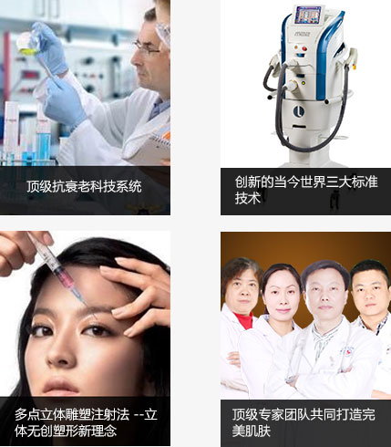

-
多点立体雕塑注射法
整体设计，多点填充，塑形除皱（无创去除 深层皱纹，静态纹）
多点立体雕塑注射法案例
-
自体脂肪活细胞疗法
重建皮肤基层营养系统活跃细胞，
改善肌肤环境自体脂肪活细胞疗法案例
-
光学紧肤系统
皮肤提升、紧致，嫩肤，除皱（激光去除：浅层皱纹 动态细纹）
光学紧肤系统案例
01
除皱抗衰老是每个人一生的战役
Anti-aging-wrinkle
女人走过最美好的青春，随着时间的流逝，便进入容颜与活力逐渐凋零的旅程，进入20岁各种潜在细纹就悄然而生，细小的皱纹也可能会变成深深 的沟壑。 进入30岁以后，皮肤、身材就开始走下坡路，随着年龄的增长，胶原蛋白的代谢也越来越弱，皮肤的衰老首先就是面庞上形成的皱纹、皮肤松 弛，面部暗黄暗淡无光泽。除皱抗衰是每个女人一生的战役，了解自己才能更好地关爱自己，让江城带领我们一起探寻女人衰老轨迹？
-
STEP1
阶段① 20岁 -
STEP2
阶段② 30岁 -
STEP3
阶段③ 40岁 -
STEP4
阶段④ 50岁 -
STEP5
阶段⑤ 60-70岁
皱纹是皮肤老化最直接的表现，它的出现预示着肌肤进入了衰败的旅程；爱美的你，怎能容忍这一切在自己身上发生？如何抗击皮肤衰老这个青春 头号大敌，找回自信与美丽？
江城逆时紧肤除皱系统―三大美肤科技
上海江城集合了目前美容皮肤领域中最尖端的除皱技术，破译肌肤的年龄密码，逆转时间痕迹，改善肌肤环境、除皱、塑形、紧肤，一步到位！让皱 纹和松弛皮肤变得紧致有弹性，由内而外，让肌肤重现新生光采。
02
多点立体雕塑注射法
Anti-aging-wrinkle
-
多点立体雕塑注射法通过注射特殊材料，以填充物的方式填充凹陷的肌肤，达到去除皱纹、肌肤饱满的目的。江城采用独特"多点立体雕塑"注射技术，突破常规单项目的定点注射弊端，根据肌理和脂肪块分布情况，综合设计，多点填充，综合塑形；
多点立体雕塑注射法，不仅具有传统注射填充的无创、安全、塑形效果，更结合的面部综合塑形的综合塑形美学特点，多点注射，综合美塑，全面提升面部轮廓与气质；QN多点立体雕塑注射法适用于面局部凹陷、鼻部扁平、唇部轻薄、面部轮廓缺乏立体感人群...更多
深沉皱纹产生的原理
25岁是皱纹产生的一个分界线，过了25岁以后，体内胶原蛋白数量逐日减少，弹力纤维的密度也大大降低，这两者对表皮的支撑作用日渐消失，随之真皮层变薄，皮肤弹性变差，最后造成不均一的塌陷，皱纹增生。
随着年龄的增长，皮肤作为人体最大的器官会逐渐失去弹性和光泽，出现皱纹、眼袋、松弛等老化现象，青春流失的印记明显雕刻在脸上，曾经紧致光滑的肌肤变得松弛，没有弹性，皱纹也越来越多，相信每个人都不愿意看见这样的自己。
江城无创除皱：是臻品，才更注重专业、品质！
-
A无创除皱，并非打一针就能变年轻，注射美容材料很关键
江城只选择通过中国国家食品药品监督管理局(SFDA)严格认证的注射美容产品；近乎苛刻的药品监管机制，严格管理针剂的来源渠道、操作规范、保存条件，确保符合国际顶尖标准。
-
指定注射医疗机构授权
顶尖注射美容材料生产商只授权具备资质医院为其产品使用机构。
-
指定注射医疗机构授权
顶尖注射美容材料生产商只授权具备资质医院为其产品使用机构。
-
指定注射医疗机构授权
顶尖注射美容材料生产商只授权具备资质医院为其产品使用机构。
-
-
B并非所有人都有资格注射无创材料，指定注射认证医师很重要
江城只选择通过中国国家食品药品监督管理局(SFDA)严格认证的注射美容产品；近乎苛刻的药品监管机制，严格管理针剂的来源渠道、操作规范、保存条件，确保符合国际顶尖标准。
-
指定机构
顶尖注射美容材料生产商只授权具备资质医院为其产品使用机构。
-
综合审美
江城医师审美能力独特，无创除皱年轻化效果自然、无痕、和谐。
-
良好修养
江城无创中心紧跟美潮流对美的领悟力及对年轻化理解力强，与时俱进。
-
娴熟技艺
江城医师精准把握注射层次、注射计量，注重年轻化整体设计，备受青睐。
-
03
自体脂肪活细胞疗法
Anti-aging-wrinkle
-
撒娇女就爱自体脂肪活细胞疗法，做回10年前小女生
35岁之后，随着年龄的增长，我的肌肤就开始加速老化，真皮 层出现缺损，表皮肌肤塌陷，肌肤缺乏弹性，皱纹出现；真皮层变 薄，肤质变差。尤其是前额、上下眼睑、耳前区、颊、颈部、下颏 、口周...
但是江城自体脂肪活细胞疗法除皱改变了我，说实话，我当时真害怕做不 好，不过现在看来，是合算的，我买回了10年前的年轻，找到了撒娇的自信...了解详情
-
自体脂肪活细胞疗法抗衰原理：深层重塑皮肤营养系统
江城自体脂肪活细胞抗衰疗法，面改善皮下脂肪层的肌肤营养系统。自主生成皮肤成纤维细胞， 持续为表层肌肤提供胶原蛋白、透明质酸和弹力纤维，抚平皱纹、保湿，恢复皮肤弹性...了解详情
自体脂肪活细胞疗法―为你带来6大变化
-
强力祛皱抗衰
自体活力细胞富含十多种生长因子，在注入真皮 浅层后，可刺激大量胶原蛋白、弹性纤维、胶质 等的产生，从而达到强力祛皱抗衰的目的！
修复肌肤组织缺失
当自体活力细胞注入肌肤以后，强大的生长因子 ，将促使组织再生，对凹陷性疤痕、组织缺失有 特殊功效，还可用于丰唇！
全面改善肤质
活性因子可加速和促进肌肤微循环的建立，从而 加速新陈代谢，全面改善肤质和肤色，令肌肤更 加白皙细腻，有光泽。
-
长久保持年轻
 自体活力细胞可促进皮肤多个组织的生长及重 新排列，从而达到全面提升肌肤状态，持续延 缓衰老。
自体活力细胞可促进皮肤多个组织的生长及重 新排列，从而达到全面提升肌肤状态，持续延 缓衰老。
清除色素色斑
面部微循环的建立，和肌肤代谢的加速，能够促 使肌肤自行排出大量毒素，有效改善色素沉着、 日晒斑、红斑、黄褐斑等多种色斑。
拯救过敏肌肤
持续使用自体活力细胞进行治疗，将改变肌肤原 有应激系统，让肌肤更健康，更有活力，有效改 善过敏肌肤。
04
光学紧肤系统
Anti-aging-wrinkle
全球最先进、全球最顶级的无创除皱塑形美容系统
-
瘦脸、面部肌肤提升
活性因子可加速和促进肌肤微循环的建立，从而 加速新陈代谢，全面改善肤质和肤色，令肌肤更 加白皙细腻，有光泽。

祛双下巴及改善颈纹
活性因子可加速和促进肌肤微循环的建立，从而 加速新陈代谢，全面改善肤质和肤色，令肌肤更 加白皙细腻，有光泽。
祛眼周皱纹及眼睑提升
活性因子可加速和促进肌肤微循环的建立，从而 加速新陈代谢，全面改善肤质和肤色，令肌肤更 加白皙细腻，有光泽。
-
曲线塑形
活性因子可加速和促进肌肤微循环的建立，从而 加速新陈代谢，全面改善肤质和肤色，令肌肤更 加白皙细腻，有光泽。
局部塑形
活性因子可加速和促进肌肤微循环的建立，从而 加速新陈代谢，全面改善肤质和肤色，令肌肤更 加白皙细腻，有光泽。
产后修复
活性因子可加速和促进肌肤微循环的建立，从而 加速新陈代谢，全面改善肤质和肤色，令肌肤更 加白皙细腻，有光泽。
-
NO.1王者之冠除皱
第六代光子多功能智能平台，蕴含着美国科医人公司数十年来的研究和美国斯坦佛、哈佛大学技术合作共同研发出来顶级美肤系统，创新的将当今世界三大标准技术：IPL管子专利技术、LightShear激光技术、多光斑点、 YAG激光技术集成在一个功能强大的平台上，是目前世界上最先进的高科技换肤设备。对于痤疮疤痕& 外科疤痕、色素性病变、皮肤重建、妊娠纹、膨胀纹、面部紧致、提升，祛皱有很好的治疗效果，是新一代全能换肤技术。[详细]
1采用最佳聚焦性能的1565mn光纤激光
2真正非剥脱技术，让肌肤不受伤害
3专利非顺序扫描技术 一步提高治疗舒适度
-
NO.2彩光嫩肤除皱
光子嫩肤是国际公认的先进技术，它采用无创性疗法，应用强脉冲光的选择性热解作用和光化学作用的原理，在深入皮肤底层、不损伤皮肤的前提下达到嫩肤、脱毛和去痘的美容效果，从根本上去除造成各种皮肤瑕疵的病源。[详细]
1全面部治疗，整体改善面部皮肤状态；
2无需停工，无需休假；
3同时可以高效率地用于颈、胸部和手部等身体部位；
4安全有效不会对皮肤有任何损坏。
-
NO.3美国slimager 射频除皱
美国slimager 射频治疗仪，采用的是物理高频磁场的原理。利用物理上产生的磁场，作用于人体的真皮层的胶原蛋白，加热至60-70度，使其重组增生，从而达到祛皱紧肤的效果。[详细]
1即刻效果：做完马上见效，一个疗程效果非常显著；
2塑身紧肤效果：既可见即刻的效果，长期效果也相当持久；
3完全无痛：不用忍受痛苦来换取美容的效果；
4不用麻醉：避免了丌可知的麻醉意外的风险；
5非常安全：在美国 FDA(食品药品管理局)无任何不良良反应报告。
快和她们一起来享受-江城逆时紧肤除皱带来的惊喜吧！
-
除皱前后对比
-
除皱前后对比
-
除皱前后对比
-
除皱前后对比
-
除皱前后对比
-
除皱前后对比
05
让你瞬间回复青春的医学美肤魔法！
Anti-aging-wrinkle
- 
-
NO.1 江城逆时紧肤除皱 全面终结肌肤老化
匹配技术作用深度精确，通过单双核复合治疗，为肌肤带来压实、锚定点提升、胶原新生及脂肪代谢速度加快四大变化；收紧皮肤的同时有效改善面部老化松弛造成的皮下组织下垂以为，达到全脸提升紧致 的效果。
NO.2 稀有尖端设备 最高品质保证
江城斥巨资购进最新一代第六代光子多功能智能平台系统，配置更加奢华，治疗效果更胜一筹, 符合人体工程学设计，安全更有保障。表皮充分受到保护，不会有损 伤，非常安全。
NO.3 江城逆时紧肤除皱 激发肌肤新生活力
非手术、非侵入、不流血、完全无痛。当时即可看到明显效果；一个月后，身体自身的修复过程会生成新的 胶原以及真皮重塑，皮肤会看起来更紧致、更年轻、更有弹性，明显改善皱纹和皮肤松弛。
NO.4 午餐式美容 超级便捷
一次治疗通常只需20分钟，即可在接受治疗后立即投入日常工作和生活，无需恢复。非常适合需要改善或保 养肌肤的忙碌一族，只需要抽出一顿午餐的时间来进行治疗，给皮肤也吃一顿丰盛的除皱紧肤"午餐"。

-
整形外科首席专家
上海市医师协会会员
中华医学会会员
毕业于同济医科大学。拥有丰富的皮肤美容外科临床诊疗经验，集生物医学、人体美学于一体，精于微创整形外科手术技巧，常年主持承担皮肤外科、美容外科临床重点科研课题攻关工作，攻坚克难，精益求精，为我院医疗美容科、皮肤外科积累了大量可靠有效的临床诊疗方案。
擅长：自体脂肪移植，注射微整形、面部年轻化、修身塑形，除皱驻颜;善于运用外科技术，修复皮肤缺损。
-

郭晔跟求美者术前沟通

郭晔精细化操作手术过程